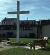

Some of my proudest moments these past two years have come at the end of a concert with the Choral Society. The director has all of us take a bow, acknowledging months of dedicated rehearsals on Monday nights from late August to April. Accompanying this 100-member group of singers and instrumentalists has expanded my repertoire and challenged my skills. It is a humbling experience to be part of such a beautiful sound as we honor our Creator together.
Several summers ago I said yes to a very new experience as the accompanist to the choir of this congregation. In a few weeks I was able to learn enough Greek pronunciation not only to follow along with the service music but to sing along as voices were needed on Sunday mornings. I continue to look forward three Sundays each month, except in the summer, to joining the choir, keeping them on pitch, while my dear friend Mary directs and keeps us on the right page.
It has been my pleasure to support my own church congregation by filling in as needed, providing accompaniment to the service music. I also have the opportunity in the summer to substitute at our anchoring church, All Saints, in Cranberry, and also accompany the nearby congregation of Hope Lutheran in Brighton Township.